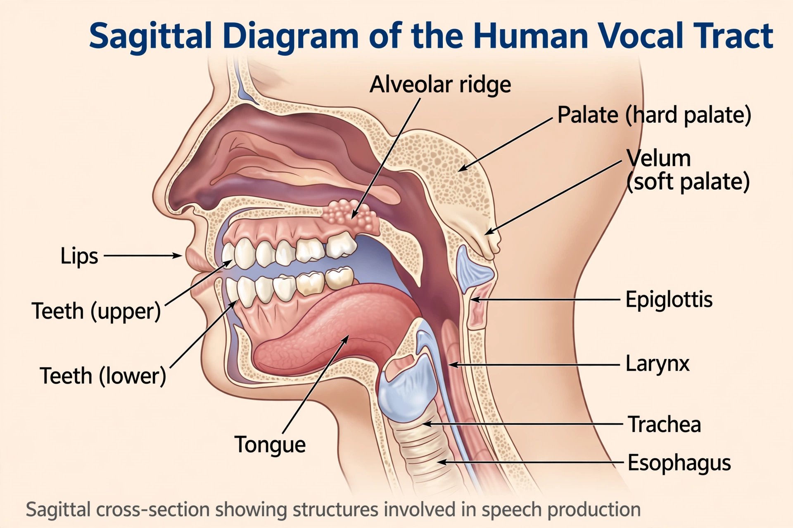

Phonetics

Phonetics is the branch of linguistics that studies the sounds of human speech: how they are produced (articulatory phonetics), their physical properties (acoustic phonetics), and how they are perceived (auditory phonetics). It is distinct from phonology, which studies how sounds pattern within a particular language. The standard notation of the field is the International Phonetic Alphabet (IPA), maintained by the International Phonetic Association since 1888, which assigns one symbol to each distinguishable sound — for example [p], [θ] (as in think) and [ŋ] (as in sing).
Articulation
Consonants are classified by voicing, place of articulation (bilabial, dental, alveolar, velar, glottal and so on) and manner of articulation (plosive, nasal, fricative, approximant...). Vowels are described by tongue height, tongue backness and lip rounding, and mapped on the vowel quadrilateral. The ancient Indian phonetic tradition accompanying Sanskrit study classified sounds by articulation with a precision not matched elsewhere until the modern era.
Applications
Phonetics underpins speech therapy, forensic speaker identification, language teaching, and speech technology such as recognition and synthesis. Henry Sweet, Daniel Jones and Peter Ladefoged are among its foundational figures; Ladefoged's fieldwork documented sounds of endangered languages worldwide. See also Grammar and Semantics.